Download the PDF of the presentation
0.1 Lab Exercise steps
We will perform a regression-based species distribution analysis using avian occurrence data (Parus major), and landsat-derived remote-sensing data. 12 field sites were surveyed for occurrence of birds roosting or nesting in nestboxes. Sampling sites (boxes) were located approximately ~50m apart in a gridded fashion within larger forest plots. Sites were recorded for presence of a nesting or roosting individual. Environmental data (landsat bands 1-5, ndvi, ndvi variance, elevation, slope, and aspect) were associated with each box location.
0.1.1 Parus major study design
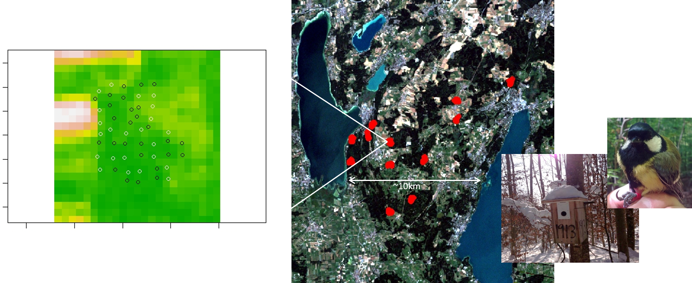
12 nestbox sites were established between lake Herrsching and lake Starnberg in Bavaria, Germany ~2012. Each field site had 50 nestboxes, and sites varied in their overall bird density.
0.1.2 Objectives for the lab:
- Consider which environmental variables might be important for determining whether a bird might be present or absent from a sampling site.
- Conduct a regression analysis using your selected predictors.
- Check your residuals for left over spatial autocorrelation.
- Project the estimated relationships over the greater Starnberg-Herrsching area.
0.2 Setup
You will need the following packages installed and loaded:
library(lme4)
library(sp)
library(raster)
library(corrplot)
library(gstat)
library(DAAG)
library(PresenceAbsence)
library(dplyr)1 Load the data
require(sp)
occu<-read.csv("https://raw.githubusercontent.com/YaleBGCC/Course/master/efs_sdm_assets/GT_Occur.csv", sep=",",header=TRUE)Check out the structure of the data: str(). And get an idea of what the data look like: head().
1 Your turn
Promote your dataframe “occu” to a “SpatialPointsDataFrame” (just like last week!):
- Find the columns with the lat long coordinates
- Tell R which data are coordinates
- Combine the coordinates data with the ‘rest’ of the data in occu
Hint: R likes coordinates to be ordered as ‘longlat’, so when assigning coordinates indicate the longitude column before the latitude column
sp = SpatialPoints(occu[,c(5,4)])
spdf = SpatialPointsDataFrame(sp, occu)
# OR
spdf = SpatialPointsDataFrame(occu[,c(5,4)], occu)
plot(spdf)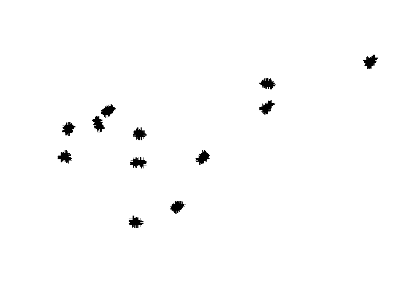
1.0.1 Spatial data should have a projection
Does the data already have a projection assigned? Try the proj4string() function to look at the data.
We should tell R what projection our coordinate data are in: “longlat”.
occ_spdf <- spTransform(SpatialPointsDataFrame(coords = occu[,c(5,4)], data = occu,
proj4string = CRS("+proj=longlat")),CRS("+proj=utm +zone=32 +datum=WGS84 +units=m +no_defs +ellps=WGS84 +towgs84=0,0,0")) ##spatial locations of point count sampling sites2 Explore the predictors
2.1 Load in the raster data
These raster layers contain environmental information based on Landsat 7 images, and a digital elevation model
#I haven't found an elegant way to get this data- on mac the following code might work, but on a windows machine you might need to manually download the files from the github page: http://github.com/YaleBGCC/Course/efs_sdm_assets/
require(raster)
#you would need to change the directory to match a path on your own local machine
# download.file("https://github.com/YaleBGCC/Course/raw/master/efs_sdm_assets/B1.tif", destfile = "C:/Users/Erica Stuber/Desktop/B1.tif")
B1 <- raster("C:/Users/Erica Stuber/Desktop/B1.tif")
# download.file("https://github.com/YaleBGCC/Course/raw/master/efs_sdm_assets/B2.tif", destfile = "C:/Users/Erica Stuber/Desktop/B2.tif")
B2 <- raster("C:/Users/Erica Stuber/Desktop/B2.tif")
# download.file("https://github.com/YaleBGCC/Course/raw/master/efs_sdm_assets/B3.tif", destfile = "C:/Users/Erica Stuber/Desktop/B3.tif")
B3 <- raster("C:/Users/Erica Stuber/Desktop/B3.tif")
# download.file("https://github.com/YaleBGCC/Course/raw/master/efs_sdm_assets/B4.tif", destfile = "C:/Users/Erica Stuber/Desktop/B4.tif")
B4 <- raster("C:/Users/Erica Stuber/Desktop/B4.tif")
# download.file("https://github.com/YaleBGCC/Course/raw/master/efs_sdm_assets/B5.tif", destfile = "C:/Users/Erica Stuber/Desktop/B5.tif")
B5 <- raster("C:/Users/Erica Stuber/Desktop/B5.tif")
#
# download.file("https://github.com/YaleBGCC/Course/raw/master/efs_sdm_assets/NDVI.tif", destfile = "C:/Users/Erica Stuber/Desktop/NDVI.tif")
NDVI <- raster("C:/Users/Erica Stuber/Desktop/NDVI.tif")
# download.file("https://github.com/YaleBGCC/Course/raw/master/efs_sdm_assets/NDVItext.tif", destfile = "C:/Users/Erica Stuber/Desktop/NDVItext.tif")
NDVItext <- raster("C:/Users/Erica Stuber/Desktop/NDVItext.tif")
#
# download.file("https://github.com/YaleBGCC/Course/raw/master/efs_sdm_assets/Elevation.tif", destfile = "C:/Users/Erica Stuber/Desktop/Elevation.tif")
Elev <- raster("C:/Users/Erica Stuber/Desktop/Elevation.tif")
# download.file("https://github.com/YaleBGCC/Course/raw/master/efs_sdm_assets/Slope.tif", destfile = "C:/Users/Erica Stuber/Desktop/Slope.tif")
Slope <- raster("C:/Users/Erica Stuber/Desktop/Slope.tif")
# download.file("https://github.com/YaleBGCC/Course/raw/master/efs_sdm_assets/Aspect.tif", destfile = "C:/Users/Erica Stuber/Desktop/Aspect.tif")
Aspect <- raster("C:/Users/Erica Stuber/Desktop/Aspect.tif")
# download.file("https://github.com/YaleBGCC/Course/raw/master/efs_sdm_assets/Dist_to_path.tif", destfile = "C:/Users/Erica Stuber/Desktop/Dist_to_path.tif")
Dist_to_path <- raster("C:/Users/Erica Stuber/Desktop/Dist_to_path.tif")
occ_stack <- stack(B1,B2,B3,B4,B5,NDVI,NDVItext,Elev,Slope,Aspect,Dist_to_path)
## OR
#load(url("https://github.com/YaleBGCC/Course/raw/master/efs_sdm_assets/occ_stack.RData"))
plot(occ_stack[[1]])
points(occ_spdf)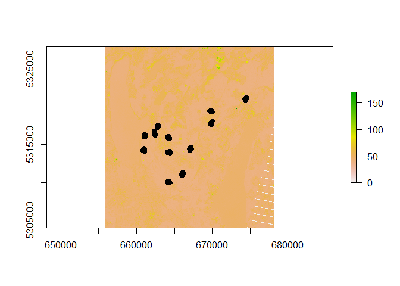
2.2 What do Landsat data mean?
For example, each band measures ‘reflectance’, which can represent some biologically relevant characteristics. LandSat7 band characteristics.
What variables might be most relevant in predicting bird occurrence? (e.g., Parus major, a forest-bird)
2.2.1 Consider the predictors and data structure
Make some histograms of your predictors. Do they differ in the range or variance of their values?
hist(occ_spdf$B1)
Are the data highly correlated?
Many LandSat variables are strongly correlated with one another, which can confound statistical analyses without huge amounts of data.
Decision: Correlated predictors can make it difficult to interpret model coefficients or response curves. So we’ll remove the most correlated predictores
# check for correlated predictors
cors=cor((occu[,13:23]),use='complete.obs') # evaluate correlations
corrplot(cors,order = "AOE", addCoef.col = "grey",number.cex=.6) # plot correlations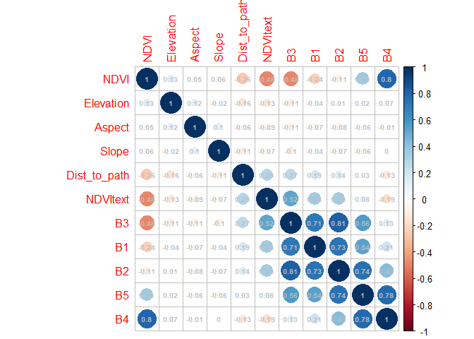
What predictors might be relevant in predicting species occurrence that aren’t too highly correlated with each other?
Rule of Thumb: a general rule is to keep your between-predictor correlations below 0.7, unless you have lots (thousands) of data points to play with
3 Make a regression-based SDM
3 Your turn
Come up with a regression model using your chosen predictors:
- occu$Occur contains occurrence data (0,1) - what ‘family’ regression model does this naturally fit? (Gaussian, Poisson, Binomial, etc.)
- List your predictor variables to include
- Write your model in R’s lme4 package syntax: sdm <- (response_variable ~ fixed_predictor1 + fixed_predictor2, family=“insert_your_chosen_family_here”, data=occu)
Hint: just before “(response_variable” you need to add a model function- this will either be lm or glm, depending on what ‘family’ you choose
sdm<-glm(Occur~ B1 + B4 + NDVI + Slope + Aspect + Dist_to_path, family="binomial", data=occu) ##this is just an example- you could have different chosen predictors3.1 Check for residual spatial autocorrelation
Before we get ahead of ourselves and look at model estimates, we should first check whether there is any spatial autocorrelation left unexplained by the model. If there is substantial spatial correlation, we shouldn’t believe too much in the estimates we get… instead we should reformulate the model to better capture relevant patterns in the data.
### have a look at your residuals
require(sp)
require(gstat)
spdata <- data.frame(resid=rstandard(sdm), x=occu$latitude, y=occu$longitude)
coordinates(spdata) <- c("x", "y")
bubble(spdata, "resid", col=c("blue", "orange"), main="Residuals",xlab="X-coordinates", ylab="Y-coordinates", alpha=0.05)
The size of the bubble represents the magnitude of the residual, and color represents sign/direction (blue = negative, orange = positive) of the residual. Its hard to see any patterns across the entire study extent (12 plots), so we can zoom in to check out individual field sites by subsetting the data to occu$Plot== and a plot number between 10 and 21.
bubble(spdata[occu$Plot==19,], "resid", col=c("blue", "orange"), main="Residuals",xlab="X-coordinates", ylab="Y-coordinates", alpha=0.15)## zoom in to plot 19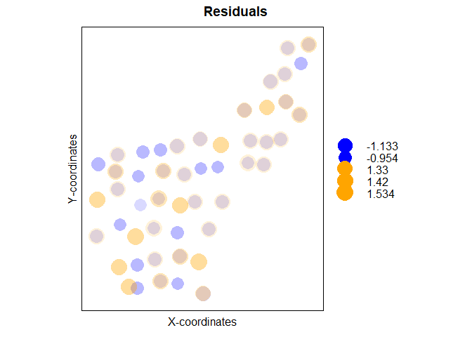
Look at a few more plots zoomed-in yourself.
3.1.1 Bubbles: What might a ‘bad’ bubble plot look like?
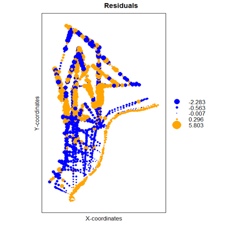
What patterns do you see in positive (orange) vs negative (blue) residuals plotted in space? What is a next course of action to remove this pattern?
3.1.2 SemiVariograms, more formal than bubble plots
Variograms: What do they mean?
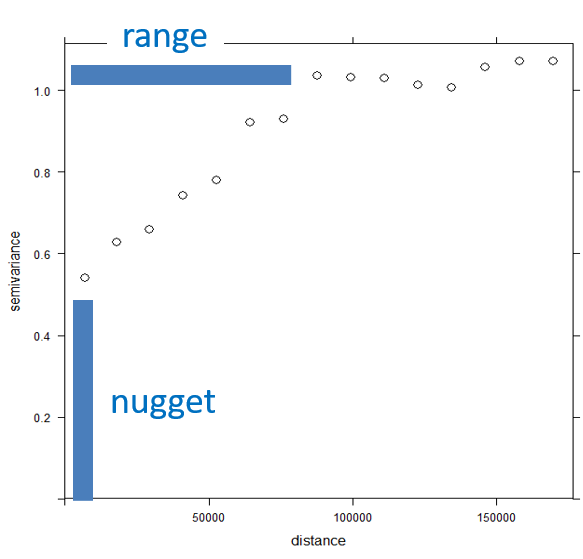
Range: distance after which the semivariance flattens out. Sampling locations closer to each other than the range are spatially autocorrelated.
Nugget: Amount of variation at ranges smaller than those sampled in the study (or distance=0). Can be attributed to measurement error.
Create a semivariogram for your fitted model.
vario.mod1 <- gstat::variogram(rstandard(sdm)~1, spdata)
plot(vario.mod1, cex=1.3, col=1,xlab="Distance (km)")
Or we can look for patterns in specific directions:
vario.mod1.4dir <- gstat::variogram(rstandard(sdm)~1, spdata,alpha=c(0,45, 90, 135)) ## alpha indicates direction in degrees
plot(vario.mod1.4dir, cex=1.3, col=1,xlab="Distance (km)")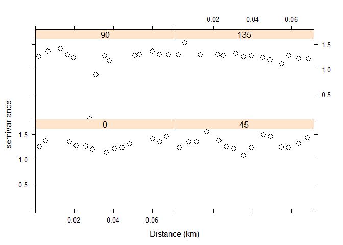
Are your variograms relatively flat? Is there evidence of an upward slope before the plot levels-off? Is it only in a particular direction?
If your residuals look ok, have a look at the estimates of your model.
4 Model estimates
summary(sdm)##
## Call:
## glm(formula = Occur ~ B1 + B4 + NDVI + Slope + Aspect + Dist_to_path,
## family = "binomial", data = occu)
##
## Deviance Residuals:
## Min 1Q Median 3Q Max
## -1.4502 -0.9482 -0.8793 1.3840 1.6482
##
## Coefficients:
## Estimate Std. Error z value Pr(>|z|)
## (Intercept) 6.3850595 3.1658064 2.017 0.04371 *
## B1 -0.1299822 0.0656129 -1.981 0.04759 *
## B4 0.0270124 0.0098956 2.730 0.00634 **
## NDVI -7.0313638 2.5836241 -2.722 0.00650 **
## Slope -3.4115046 5.7030999 -0.598 0.54972
## Aspect 0.0121515 0.0307807 0.395 0.69301
## Dist_to_path 0.0012611 0.0008913 1.415 0.15710
## ---
## Signif. codes: 0 '***' 0.001 '**' 0.01 '*' 0.05 '.' 0.1 ' ' 1
##
## (Dispersion parameter for binomial family taken to be 1)
##
## Null deviance: 1729.0 on 1325 degrees of freedom
## Residual deviance: 1716.9 on 1319 degrees of freedom
## AIC: 1730.9
##
## Number of Fisher Scoring iterations: 44 Your turn
Just for fun…
If your residual indicate some leftover spatial autocorrelation, we should first try to account for it before moving on to predicting occurrence over a larger extent:
- Account for autocorrelation with a correlated error term
- Account for autocorrelation with coordinates as interacting fixed effects
##fitting spatial correlation error terms is computationally costly, and only few packages are programmed for this functionality
##we'll try the glmmPQL function..
##glmmPQL requires a few particulars about input data however.. must be a 'mixed effect' model (i.e., contains a random effect), cannot have repeated measures from same location; so we must first subset our data to fit this
sdm_pql <- occu %>%
filter(CatchMonth==5) %>%
group_by(latitude, longitude) %>%
filter(row_number(X) == 1)
sdm_cor <- MASS::glmmPQL(Occur~ B1 + B4 + NDVI + Slope + Aspect + Dist_to_path, random= ~ 1|Plot, correlation = nlme::corExp(form = ~ "longitude" + "latitude" | Plot), family = binomial(link = "logit"), data = sdm_pql, verbose=FALSE)
# OR
sdm_cor<-glm(Occur~ B1 + B4 + NDVI + Slope + Aspect + Dist_to_path + latitude*longitude, family="binomial", data=occu) ##but less flexible about the shape that spatial correlation can take5 Model validation
Models can be validated in (at least) three general ways. What have you used or seen before?
5.0.1 Internal validation
## internal validation
pred.within <- predict(sdm,type="response") #for each observed data point, what does the model predict as probability of occurrence?
## resub acc
## build testing dataframe using model predictions
modl <- "pred.glm" # add var to keep track of model
dat2 <- cbind(modl, occu[11], pred.within) # build dataframe w/sdm predictions
head(dat2) # examine prediction dataframe## fitted vs observed plot
plot(dat2$Occur,dat2$pred.within)
abline(lm(dat2$pred.within~dat2$Occur))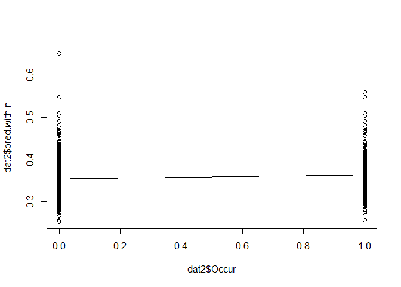
However, in SDMs we are often interested in ‘binarizing’ our model output- rather than predicting probability of occurrence, we might want occurrence: yes/no
Therefore we need a way to binarize our probabilities, and then assess how ‘accurate’ our model + threshold is as a classifier
## determine best threshold using PresenceAbsence package Sec7.1
## see help(optimal.thresholds) for more info
#help(optimal.thresholds) # options for optimizing threshold
mod.cut <- optimal.thresholds(dat2, opt.methods = c("MaxKappa")) # default threshold=0.5
modcut.LR<-mod.cut
mod.cut # examine threshold=ObsPrev5.0.2 Confusion matrix for a two class classification problem
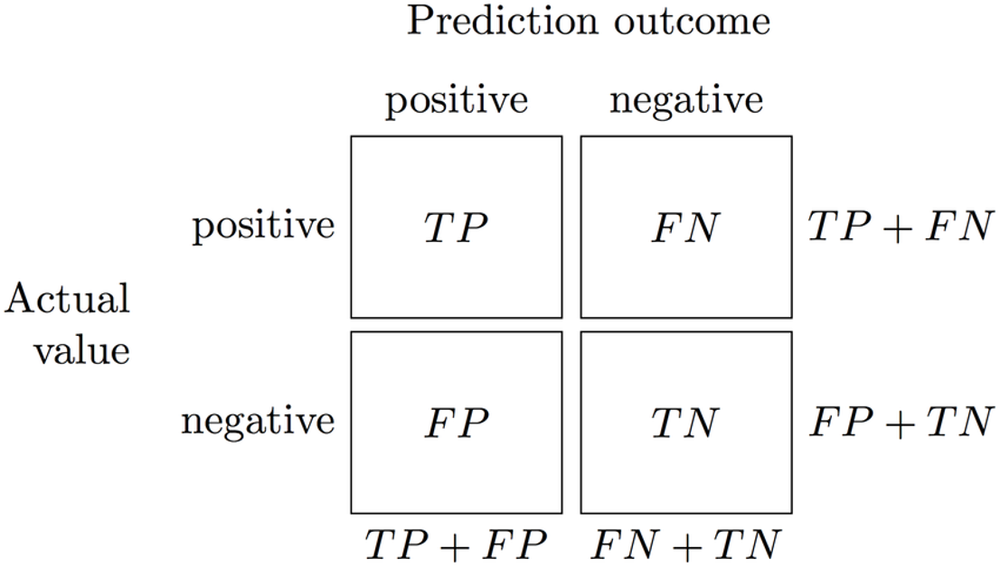
Read more about confusion matrices, and more metrics for classification accuracy here: Confusion matrix.
What is model sensitivity? specificity? True skill statistic?
## generate confusion matrix
mod1.cfmat <- table(dat2[[2]], factor(as.numeric(dat2$pred.within >= mod.cut$pred.within)))
mod1.cfmat # examine##
## 0 1
## 0 515 337
## 1 239 235#########
## calculate model accuracies with standard deviation=F
mod1.acc <- presence.absence.accuracy(dat2, threshold = mod.cut$pred.within, st.dev = F)
tss <- mod1.acc$sensitivity + mod1.acc$specificity - 1 # code TSS metric
mod1.acc <- cbind(mod1.acc[1:7], tss) # bind all metrics
mod1.acc[c(1, 4:5, 7:8)] # examine accuraciesmod1.acc5.0.3 In-sample cross-validation
In cross-validation, data are partitioned (either randomly, as below, or somehow strategically) into a number of `folds’ (usually 5-10). One at a time, each fold is removed, while the remaining data is used to re-fit the regression model and to predict on the held-out observations.
## perform 10-fold validation; requires pkg DAAG
xfold10 <- CVbinary(sdm, nfolds = 10, print.details = F) # 10fold
mod1.10f <- xfold10$cvhat # assign new name to 10fold estimates
dat2 <- cbind(dat2,mod1.10f) # bind all metrics
head(dat2) ##compare to full model metricsWhat does it mean if your cross-validation metrics are much lower than metrics from the full model?
## xfold acc
mod1.cfmatX <- table(dat2[[2]], factor(as.numeric(dat2$mod1.10f >= mod.cut$pred.within)))
mod1.accX <- presence.absence.accuracy(dat2, threshold = mod.cut$pred.within, st.dev = F)
tss<- mod1.accX$sensitivity + mod1.accX$specificity - 1 # code TSS metric
mod1.accX <- cbind(mod1.accX[1:7], tss) # bind all metrics
mod1.accX[c(1, 4:5, 7:8)] # examine accuracies5.0.4 External validation
The strongest validation is external to the data sampled to fit the model. Ideally, we would fit our model (using internal cross-validation), then resample locations across a range of predictions made from the fitted model. We would then compare those new observations with what our model predicted.
If you are happy with your model’s performance:
6 Model predictions
6.0.1 Make predictions to the rest of the region based on your model
pred_stack<-stack(occ_stack[[1]],occ_stack[[4]],occ_stack[[6]],occ_stack[[9]],occ_stack[[10]],occ_stack[[11]]) ##match this to the predictors that you chose for your specific model. !!Keep them in the same order as they went in to the model!!
pred.glm<-predict(pred_stack,sdm,type="response")
plot(pred.glm)
points(occ_spdf,col=as.factor(occ_spdf$Occur))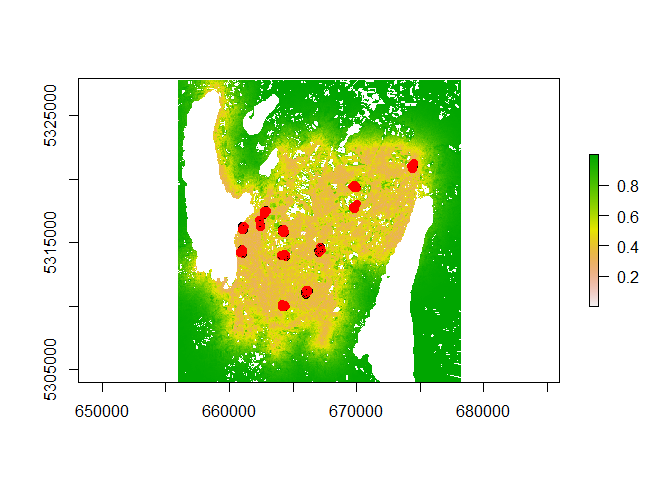 Again, we might want to zoom in a bit closer to a specific field site. try the function drawExtent() to draw an outline around a cluster of plotted points. This will give you the coordinates to crop the data to in order to zoom in somewhere specific.
#drawExtent()
plot19<-extent(c(669663, 670096, 5317568, 5318135))
pred_crop<-crop(pred.glm,extent(plot19))
plot(pred_crop)
points(occ_spdf,col=as.factor(occ_spdf$Occur))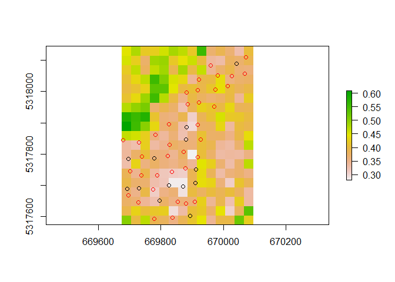
7 Example code for other models
Other commonly used models include: generalized additive models, random forest, maximum entropy models
You can read more about these models and SDMs in general here: General SDMs, SDM model comparisons, Regression Trees and Forests, MaxEnt, MaxEnt2
Each model type has their own associated assumptions, strengths, and weaknesses, and no one is clearly the best for all applications.
Below you will find code to run a couple of these models using the data from above. The code is for example-purposes, to get a feel for how your inferences might change based on the models you choose. We do not go into detail on these models but feel free to contact me for more information if you are interested in more information! email me!
library(gam)## Loading required package: splines## Loading required package: foreach## Loaded gam 1.16library(randomForest)## randomForest 4.6-14## Type rfNews() to see new features/changes/bug fixes.##
## Attaching package: 'randomForest'## The following object is masked from 'package:dplyr':
##
## combinegam.model<-gam(Occur~ s(B1) +s(B4) + s(NDVI) + s(Slope) + s(Aspect) + s(Dist_to_path), family="binomial", data = occu) #gam is not restricted to 'linear' relationships between response and predictor, rather no functional forms are specified and gam will estimate using 'smoothed splines' for highly flexible, non-linear relationships
plot(gam.model)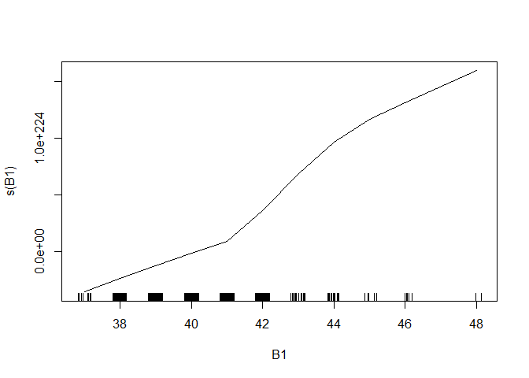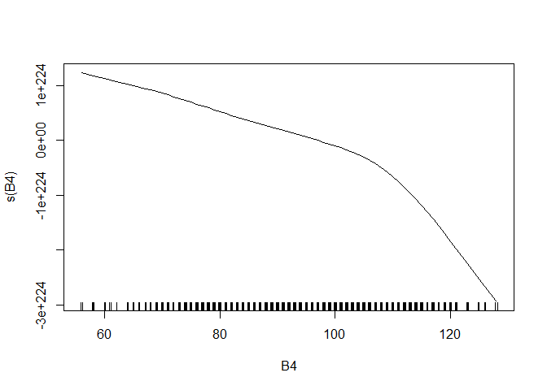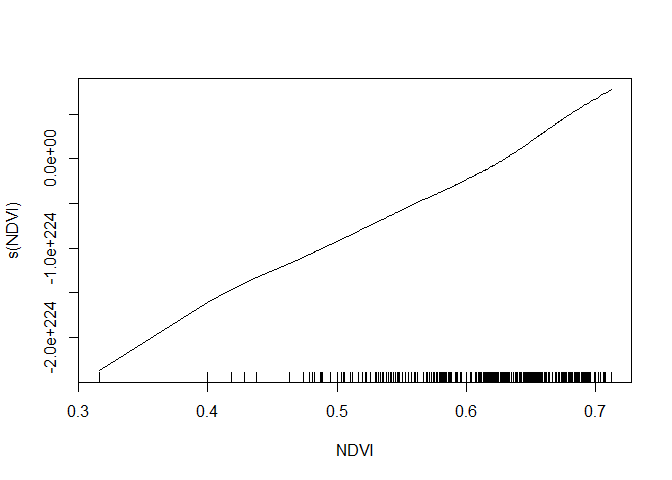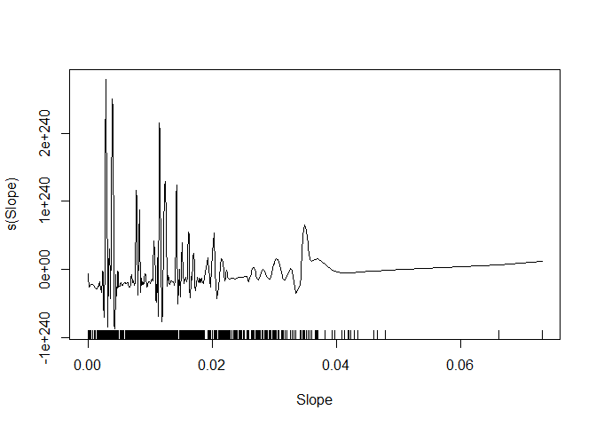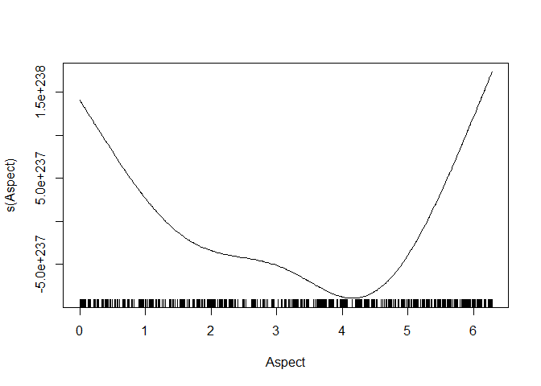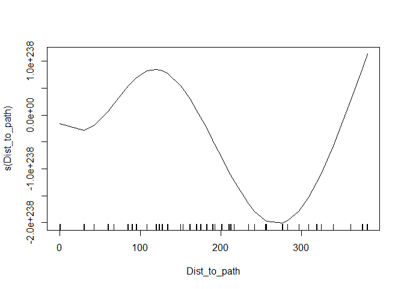
# Prediction map
gammap <- predict(pred_stack,gam.model,type="response")
plot(gammap)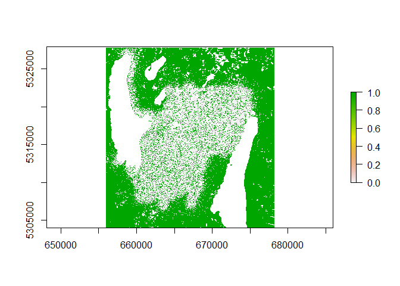
set.seed(1234)
rf.model <- randomForest(Occur ~ B1 + B4 + NDVI + Slope + Aspect + Dist_to_path, data = occu)## Warning in randomForest.default(m, y, ...): The response has five or fewer
## unique values. Are you sure you want to do regression?rfImp <- importance(rf.model) #ranked variable 'importance'
varImpPlot(rf.model)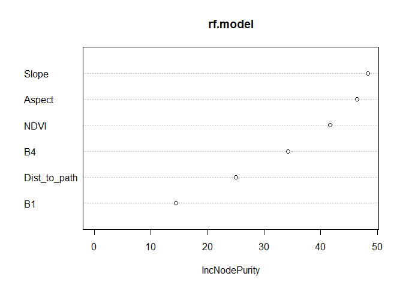
rfmap <- predict(pred_stack,rf.model,type="response")# Prediction map
plot(rfmap)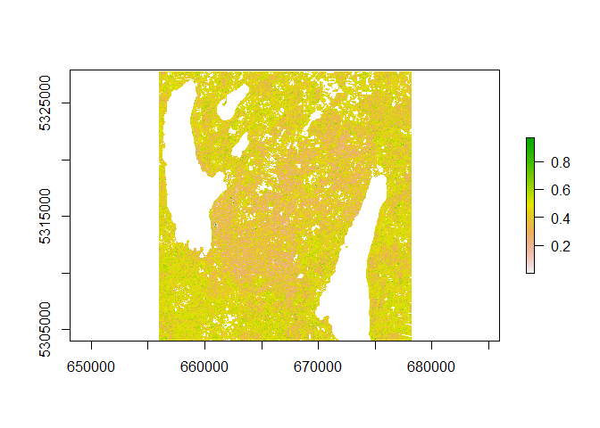
8 Homework exercise
You have access to 7 grassland bird presence/absence data sets: DICK = dickcissel, EAME = eastern meadowlark, FISP = field sparrow, GRSP = grasshopper sparrow, NOBO = northern bobwhite quail, RWBL = red-winged blackbird, WEME = western meadowlark. For this exercise, you will select 2 species for which you will investigate the spatial scale that predicts occurrence at a sampling location.
Occurrence data were based on aural point count surveys taken at various wildlife management areas across southern Nebraska during the breeding season. During a 3min period, observers would count the number of individuals of each species detected within a 500m radius. Count data were collapsed into binary 0/1 data for this exercise.
Your datasets include the proportions of woodland and grassland found in multiple ‘buffer’ radii around each sampling site, representing different ‘scales’ at which landcover data might predict bird occurrence.
8.0.1 General workflow:
- Choose 2 target species of interest.
- Think about what relationships these species might have with proportions of woodland and grassland in the surrounding area (e.g., linear? quadratic?).
- Hypothesize whether bird occurrence at a location should be influenced by very local or relatively larger-scale landcover characteristics.
- Try to justify the hypotheses.
- Think about how you would test whether your hypothesized ‘scales’ are the ‘right’ ones.
- Condunct the test- likely: fit a model or models including your hypothesized predictor variables for each species
- Were your hypotheses supported?
8.0.2 Homework products
Come to class next week with example(s) of ways you might test which spatial scales are most informative in occupancy studies, and any possible assumptions that underly those methods. Be prepared to explain why you hypothesized that certain spatial scales might be more important than others, and whether your hypothesis was supported.
8.0.3 Warm-up code
You might need the following packages installed and loaded:
library(lme4)
library(sp)
library(rgdal)
library(corrplot)
library(gstat)
library(DAAG)
library(PresenceAbsence)
library(dplyr)Read in some data
#dataspp1<-read.csv("path_to_where_you_downloaded_the_data/DICK_occ.csv", sep=",",header=TRUE)Look at the data structure and content using str() and head()
Route.Point indicates the sampling location detN was the species count WMA refers to the larger Wildlife Management Area where the survey site was nested inside grass###m refers to the proportions of grassland found within a ###m radius ‘buffer’ around the sampling location trees###m refers to the proportions of woodland found within a ###m radius ‘buffer’ around the sampling location